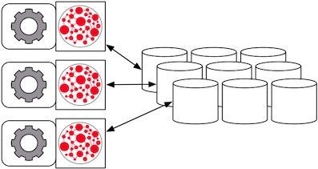
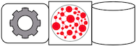

The Apache Cassandra database is the right choice when you need scalability and high availability without compromising performance. Linear scalability and proven fault-tolerance on commodity hardware or cloud infrastructure make it the perfect platform for mission-critical data. Cassandra’s support for replicating across multiple datacenters is best-in-class, providing lower latency for your users and the peace of mind of knowing that you can survive regional outages. The largest known Cassandra cluster has over 300 TB of data in over 400 machines. — Apache Cassandra Homepage
Deploying on Managed Machines
The following sections outline the various ways in which Titan can be used in concert with Cassandra.
Local Server Mode
Cassandra can be run as a standalone database on the same local host as Titan and the end-user application. In this model, Titan and Cassandra communicate with one another via a localhost socket. Running Titan over Cassandra requires the following setup steps:
- Download, unpack, and setup Cassandra on your local machine.
- Start Cassandra by invoking
bin/cassandra -fon the command line in the directory where Cassandra was unpacked. Ensure that Cassandra started successfully.
Now, you can create a Cassandra TitanGraph as follows:
Configuration conf = new BaseConfiguration();
conf.setProperty("storage.backend","cassandra");
conf.setProperty("storage.hostname","127.0.0.1");
TitanGraph g = TitanFactory.open(conf);
In the Gremlin shell, you can not define the type of the variables conf and g. Therefore, simply leave off the type declaration.
Remote Server Mode

When the graph needs to scale beyond the confines of a single machine, then Cassandra and Titan are logically separated into different machines. In this model, the Cassandra cluster maintains the graph representation and any number of Titan instances maintain socket-based read/write access to the Cassandra cluster. The end-user application can directly interact with Titan within the same JVM as Titan.
For example, suppose we have a running Cassandra cluster where one of the machines has the IP address 77.77.77.77, then connecting Titan with the cluster is accomplished as follows:
Configuration conf = new BaseConfiguration();
conf.setProperty("storage.backend","cassandra");
conf.setProperty("storage.hostname","77.77.77.77");
TitanGraph g = TitanFactory.open(conf);
In the Gremlin shell, you can not define the type of the variables conf and g. Therefore, simply leave off the type declaration.
Remote Server Mode with Rexster

Rexster can be wrapped around each Titan instance defined in the previous subsection. In this way, the end-user application need not be a Java-based application as it can communicate with Rexster over REST. This type of deployment is great for polyglot architectures where various components written in different languages need to reference and compute on the graph.
http://rexster.titan.machine1/mygraph/vertices/1
http://rexster.titan.machine2/mygraph/tp/gremlin?script=g.v(1).out('follows').out('created')
In this case, each Rexster server would be configured to connect to the Cassandra cluster. The following shows the graph specific fragment of the Rexster configuration. Refer to the Rexster configuration page for a complete example.
<graph>
<graph-name>mygraph</graph-name>
<graph-type>com.thinkaurelius.titan.tinkerpop.rexster.TitanGraphConfiguration</graph-type>
<graph-location></graph-location>
<graph-read-only>false</graph-read-only>
<properties>
<storage.backend>cassandra</storage.backend>
<storage.hostname>77.77.77.77</storage.hostname>
</properties>
<extensions>
<allows>
<allow>tp:gremlin</allow>
</allows>
</extensions>
</graph>
Titan Embedded Mode

Finally, Cassandra can be embedded in Titan, which means, that Titan and Cassandra run in the same JVM and communicate via in process calls rather than over the network. This removes the (de)serialization and network protocol overhead and can therefore lead to considerable performance improvements. In this deployment mode, Titan internally starts a cassandra daemon and Titan no longer connects to an existing cluster but is its own cluster.
To use Titan in embedded mode, simply configure embeddedcassandra as the storage backend. The configuration options listed below also apply to embedded Cassandra. In creating a Titan cluster, ensure that the individual nodes can discover each other via the Gossip protocol, so setup a Titan-with-Cassandra-embedded cluster much like you would a stand alone Cassandra cluster. When running Titan in embedded mode, the Cassandra yaml file is configured using the additional configuration option storage.cassandra-config-dir, which specifies the yaml file as a full url, e.g. storage.cassandra-config-dir = file:///home/cassandra.yaml.
When running a cluster with Titan and Cassandra embedded, it is advisable to expose Titan through the Rexster server so that applications can remotely connect to the Titan graph database and execute queries. To make this setup easy and simple, Titan comes packaged with Titan Server.
Cassandra Specific Configuration
In addition to the general Titan Graph Configuration, there are the following Cassandra specific Titan configuration options:
| Option | Description | Value | Default | Modifiable |
|---|---|---|---|---|
| storage.keyspace | Name of the keyspace in which to store the Titan specific column families | String | titan | No |
| storage.hostname | IP address or hostname of the Cassandra cluster node that this Titan instance connects to. Use a list of comma-separated hostnames or IP addresses to seed multiple multiple cassandra nodes. | IP address or hostname | – | Yes |
| storage.port | Port on which to connect to Cassandra cluster node | Integer | 9160 | Yes |
| storage.connection-timeout | Default time out in milliseconds after which to fail a connection attempt with a Cassandra node | Integer | 10000 | Yes |
| storage.connection-pool-size | Maximum size of the connection pool for connections to the Cassandra cluster | Integer | 32 | Yes |
| storage.read-consistency-level | Cassandra consistency level for read operations | – | QUORUM | Yes |
| storage.write-consistency-level | Cassandra consistency level for write operations | – | QUORUM | Yes |
| storage.replication-factor | The replication factor to use. The higher the replication factor, the more robust the graph database is to machine failure at the expense of data duplication. The default value should be overwritten for production system to ensure robustness. A value of 3 is recommended. This replication factor can only be set when the keyspace is initially created. On an existing keyspace, this value is ignored. | Integer | 1 | No |
| storage.cassandra.thrift.frame_size_mb | The maximum frame size to be used by thrift for transport. Increase this value when retrieving very large result sets. Only applicable when storage.backend=cassandrathrift | Integer | 16 | No |
For more information on Cassandra consistency levels and acceptable values, please refer to the Cassandra documentation. In general, higher levels are more consistent and robust but have higher latency.
Global Graph Operations
Titan over Cassandra supports global vertex and edge iteration. However, note that all these vertices and/or edges will be loaded into memory which can cause OutOfMemoryException. Use Faunus to iterate over all vertices or edges in large graphs.
Deploying on Amazon EC2

Amazon EC2 is a web service that provides resizable compute capacity in the cloud. It is designed to make web-scale computing easier for developers.
Follow these steps to setup a Cassandra cluster on EC2 and deploy Titan over Cassandra. To follow these instructions, you need an Amazon AWS account with established authentication credentials and some basic knowledge of AWS and EC2.
Setup Cassandra Cluster
These instructions for configuring and launching the DataStax Cassandra Community Edition AMI are based on the excellent documentation from DataStax and focus on aspects relevant for a Titan deployment.
Setting up Security Group
- Navigate to the EC2 Console Dashboard, then click on Security Groups under Network & Security.
- Create a new security group. Click Inbound. Set the “Create a new rule” dropdown menu to “Custom TCP rule”. Add a rule for port 22 from source 0.0.0.0/0. Add a rule for ports 1024-65535 from the security group members. If you
don’t want to open all unprivileged ports among security group members, then at least open 7000, 7199, and 9160 among security group members. Tip: the “Source” dropdown will autocomplete security group identifiers once “sg” is typed in the box, so you needn’t have the exact value ready beforehand.
Launch DataStax Cassandra AMI
- Launch the DataStax AMI in your desired zone
- On the Instance Details page of the Request Instances Wizard, set “Number of Instances” to your desired number of Cassandra nodes. Set “Instance Type” to at least m1.large. We recommend m1.large.
- On the Advanced Instance Options page of the Request Instances Wizard, set the “as text” radio button under “User Data”, then fill this into the text box:
--clustername [cassandra-cluster-name]
--totalnodes [number-of-instances]
--version community
--opscenter no
[number-of-instances] in this configuration must match the number of EC2 instances configured on the previous wizard page. [cassandra-cluster-name] can be any string used for identification. For example:
--clustername titan
--totalnodes 4
--version community
--opscenter no
- On the Tags page of the Request Instances Wizard you can apply any desired configurations. These tags exist only at the EC2 administrative level and have no effect on the Cassandra daemons’ configuration or operation.
- On the Create Key Pair page of the Request Instances Wizard, either select an existing key pair or create a new one. The PEM file containing the private half of the selected key pair will be required to connect to these instances.
- On the Configure Firewall page of the Request Instances Wizard, select the security group created earlier.
- Review and launch instances on the final wizard page.
Verify Successful Instance Launch
- SSH into any Cassandra instance node:
ssh -i [your-private-key].pem ubuntu[public-dns-name-of-any-cassandra-instance]@
- Run the Cassandra nodetool
nodetool -h 127.0.0.1 ringto inspect the state of the Cassandra token ring. You should see as many nodes in this command’s output as instances launched in the previous steps.
Note, that the AMI takes a few minutes to configure each instance. A shell prompt will appear upon successful configuration when you SSH into the instance.
Launch Titan Instances
Launch additional EC2 instances to run Titan which are either configured in Remote Server Mode or Remote Server Mode with Rexster as described above. You only need to note the IP address of one of the Cassandra cluster instances and configure it as the host name. The particular EC2 instance to run and the particular configuration depends on your use case.
Example Titan Instance on Amazon Linux AMI
- Launch the Amazon Linux AMI in the same zone of the Cassandra cluster. Choose your desired EC2 instance type depending on the amount of resources you need. Use the default configuration options and select the same Key Pair and Security Group as for the Cassandra cluster configured in the previous step.
- SSH into the newly created instance via
ssh -i [your-private-key].pem ec2-user[public-dns-name-of-the-instance]. You may have to wait a little for the instance to launch.
- Download the current Titan distribution with
wgetand unpack the archive locally to the home directory. Start the gremlin shell to verify that Titan runs successfully. For more information on how to unpack Titan and start the gremlin shell, please refer to the Getting Started guide.
- Create a configuration file with
vi titan.propertiesand add the following linesstorage.backend = cassandra storage.hostname = [IP-address-of-one-Cassandra-EC2-instance]
You may add additional configuration options found on this page or under Graph Configuration.
- Start the gremlin shell again and type the following:
gremlin> g = TitanFactory.open('titan.properties') ==>titangraph[cassandra:[IP-address-of-one-Cassandra-EC2-instance]]
You have successfully connected this Titan instance to the Cassandra cluster and can start to operate on the graph.